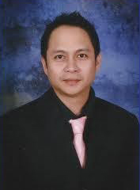
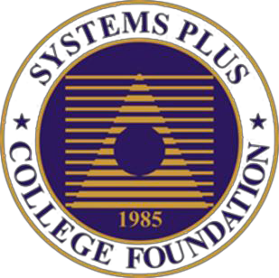
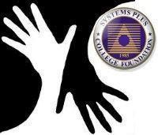
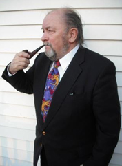
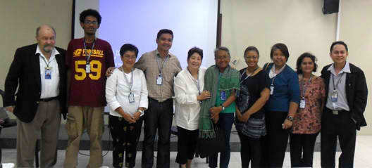
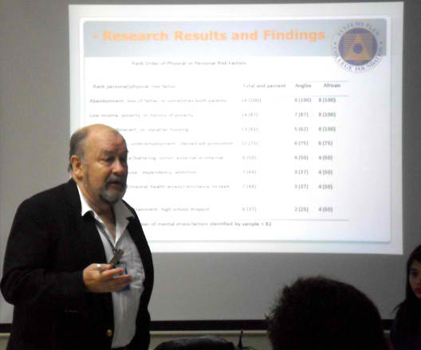
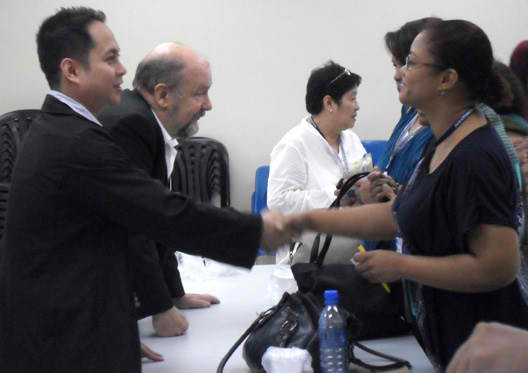

|  | 
PARC-SPCF RESEARCH SPANS THE GLOBEPARC (Philippine Amerasian Research Center)Dr. P.C."Pete" KutscheraSPRU (Social and Psychological Research Unit)Prof. Jose Maria G. Pelayo III |
  |

Dr. P.C. “Pete” Kutschera and Prof. Jose Maria G. Pelayo III, far left & right respectively, meet in January, 2012 with community and political organizations advocating various points of view for the cause of Filipino Amerasians. Representatives at the session at Systems Plus College Foundation in Angeles City, Pampanga in January, 2012 included Marc Gilbore of the United Philippine Amerasians (UPA) Angeles City branch, second from left, and Aida F. Santos-Maranan, Chair, Board of Directors of the Quezon City-based WeDpro, Inc., fifth from left. Representatives of the UPA, WeDpro, Buklod and others attended the informal session.
“It is crucially important to make every effort to hear all points of view regarding current and past conditions and future challenges facing Filipino Amerasians and Pan Amerasian population cohorts throughout the Western Pacific Basin,” Kutschera stated.

Dr. “Pete” Kutschera briefs on his Filipino Amerasian dissertation research and presents an empirical research paper entitled the “Filipino Amerasian Family Construct” to the Forum on Cross Cultural Identities at the UP-Diliman’s Asian Center in Quezon City February 22, 2012. He was invited to attend and lecture on his 3-year long Amerasian study results and findings by Dr. Carolyn I. Sobritchea, Asian Center Dean whose 1999 study “Filipino Amerasians: Living in the Margins” is regarded as an empirical study classic on the subject.

Prof. Jose Maria G. Pelayo III, Deputy Director/Senior Research Officer of PARC (Philippine Amerasian Research Center) greets attendees at PARC’s community meeting for grassroots Amerasian and political groups held at Systems Plus College Foundation (SPCF), the Amerasian Research Network’s research affiliate, located in Angeles City, Pampanga, Luzon, Philippines in January, 2012.